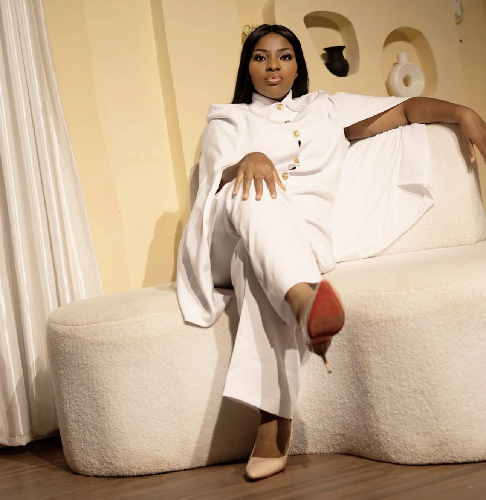

Visionary Leader · Mentor · Nation Builder

Pastor Dr. Alexandra Louisa is a visionary leader, mentor, speaker, and transformational voice committed to raising leaders and empowering women to fulfil their divine purpose.
Through The Deborah Network, she has dedicated her life to equipping individuals with spiritual wisdom, leadership principles, and practical tools necessary to create meaningful impact in their communities and beyond.
Her passion for mentorship, discipleship, leadership development, and nation-building continues to inspire thousands across different regions and backgrounds.
Grounded in rigorous study of the Word and academic excellence, she pursued theological and leadership training that would shape decades of ministry.
A clear and compelling call from God stirred a burden to see women rise — networked, empowered, and equipped to fulfil their divine purpose.
In obedience to that calling, she founded The Deborah Network as a house of refuge and an umbrella for women of all ages and walks of life.
Conferences, mentorship circles, and discipleship programmes multiplied, raising leaders across communities, churches, and nations.
Her faithful service has been recognised through awards and honours celebrating excellence in leadership and women's empowerment.
From glory to glory, the vision continues to expand — touching thousands of lives and transforming homes, communities, and nations.
God has not called us merely to exist; He has called us to influence, lead, and transform our generation.— Pastor Dr. Alexandra Louisa
Recognised for outstanding, values-driven leadership in ministry and community.
Celebrated for raising and equipping women to thrive in every sphere of life.
Honoured for years of devoted mentorship and discipleship of emerging leaders.
Acknowledged for advancing the Kingdom of God across communities and nations.
Awarded for humanitarian outreach and compassionate care for the vulnerable.
Commended as a transformational voice inspiring audiences toward purpose.
Become part of a global community of women raised to influence, lead, and transform their generation for the glory of God.
Online · Here to help